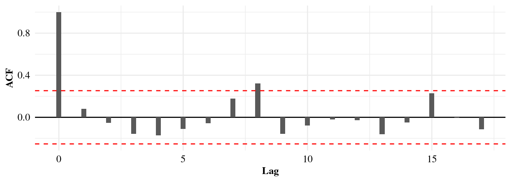

filename = './data/discharge.csv'
Qdata = read.csv(filename, col.names = c("Year", "Month", "Day", "Q"))
# construct time serie
Qdata$Date = paste(Qdata[["Year"]], Qdata[["Month"]], Qdata[["Day"]], sep="-")
Qdata$Date = ymd(Qdata$Date)
# final time serie
Qdata = Qdata[, c("Date", "Q")]Flood Frequency Analysis (FFA) with Block-Maxima
1 Data Import
Will work with real-world data to analyze flood events using daily streamflow data covering the period from August 1st, 1958, to December 31st, 2020.
Let’s consider the formatted daily streamflow data file for the target catchment. We can read the data into a data frame using the read.csv() function. We will also set the column names using the col.names argument, and use the lubridate library to prepare a time serie.
The output is a data frame (or a matrix) with 22799 rows and 2 columns.
| Date | Q |
|---|---|
| 1958-08-01 | 0.2357639 |
| 1958-08-02 | 0.1841204 |
| 1958-08-03 | 0.1437037 |
| 1958-08-04 | 0.1437037 |
| 1958-08-05 | 0.1437037 |
| 1958-08-06 | 0.1437037 |
Note
We can display the structure of the data frame using the str() function.
str(Qdata) 'data.frame': 22799 obs. of 2 variables:
$ Date: Date, format: "1958-08-01" "1958-08-02" ...
$ Q : num 0.236 0.184 0.144 0.144 0.144 ...2 Sampling Extreme Events
2.1 The Block-Maxima Approach
The Block-Maxima Approach, consists of sampling the maximum streamflow value for each year (or block). This method is straightforward to implement and ensures, by construction, that the sampled values are statistically independent, a key requirement in extreme value analysis (EVA).

2.2 Exract Annual Maximum Flows (AMF) from the daily streamflow serie
1. To extract annual maximum flows (AMF) from the streamflow series, we need to define a function that returns the maximum value of a block of data:
library(dplyr)
library(lubridate)
extract_annual_max = function(df)
{
df %>%
mutate(Year = year(Date)) %>% # extract year from Date
group_by(Year) %>%
filter(Q == max(Q)) %>% # keep only max flow per year
slice(1) %>% # in case of ties, keep first max
ungroup() %>%
select(Year, Date, AMAX=Q)
}2. Now, we apply the function to the data to extract AMF for each year:
extractedAMF = extract_annual_max(Qdata)| Year | Date | AMAX |
|---|---|---|
| 1958 | 1958-12-20 | 39.96984 |
| 1959 | 1959-03-07 | 36.89593 |
| 1960 | 1960-10-06 | 58.41780 |
| 1961 | 1961-12-11 | 18.44796 |
| 1962 | 1962-03-05 | 19.47185 |
| 1963 | 1963-04-11 | 29.21002 |
2.3 Display Sampled Events
Now, we overlap the extracted Annual Maximum Flow with the original daily discharge time serie to visualize the sampling process. We use the functions from the dplyr and ggplot2 library to create the plot.
Show the code
library(ggplot2)
amf.plot = ggplot() +
geom_line(data=Qdata, aes(x=Date, y=Q), color="steelblue", size=0.7, alpha=0.8) +
geom_point(data=extractedAMF, aes(x=Date, y=AMAX), color ="red", size=1.2) +
labs(x="Date", y="Discharge (Q)") +
theme_minimal(base_size = 13) +
theme(axis.title=element_text(size=12, face="bold"),
axis.text=element_text(size=12, color="black"))
print(amf.plot)
3 Autocorrelation Testing
Recall
The extractedAMF variable used in the following code blocs is created previously in the Sampling Events section The acf function is a R-base function, no installation needed
3.1 What is Autocorrelation?
Autocorrelation (or autocovariance) of a series refers to the fact that in a time or spatial serie, the measurement of a phenomenon at time t can be correlated with previous measurements (at time t-1, t-2, t-3, etc.) or with subsequent measurements (at t+1, t+2, t+3, …). An autocorrelated series is thus correlated with itself, with a given lag (please refer here for mode details).
To assess autocorrelation, two methods will be used in this lab
🔍 Correlogram:
- Visualization of correlation coefficients between the serie and its lags
- Based on the autocorrelation function (ACF)
- Helps identify the presence and extent of dependencies over time
📊 Wald-Wolfowitz Test (1940):
- Non-parametric to assess the randomness of a time series
- Used to detect the absence of randomness in the series
- Null hypothesis: The sequence of observations is random
3.1.1 Correlogram
If you execute the above given chunk, it generates the Figure 3 as output:
Show the code
# compute autocorrelation lag
bacf <- acf(extractedAMF$AMAX, plot = FALSE)
bacfdf <- with(bacf, data.frame(lag, acf))
# confidence interval
n <- length(extractedAMF$AMAX)
conf_limit <- 1.96 / sqrt(n)
# correlogram
library(ggplot2)
ggplot(data=bacfdf, mapping=aes(x=lag, y=acf)) +
geom_hline(aes(yintercept=0)) +
geom_bar(stat="identity", position="identity", width=.2) +
geom_hline(yintercept=conf_limit, linetype="dashed", color="red") +
geom_hline(yintercept=-conf_limit, linetype="dashed", color="red") +
labs(y="ACF", x="Lag") +
theme_minimal() +
theme(axis.title=element_text(size=10, face="bold", family="Times"),
axis.text=element_text(size=10, color="black", family="Times"))

Interpretation
Looking at the 95% confidence interval bounds in the correlogram, we can see that from lag -1 to lag-16, the autocorrelation is only significant at lag-8, so we can conclude that the maximum annual flood is a random variable.
3.1.2 Wald-Wolfowitz (WW) Test
In the chunk below, we use the ww.test(...) function from {trend} package to perform the WW test at the 0.05 significance level to test the hypothesis that the maximum annual flood is a random variable.
wwtest = trend::ww.test(extractedAMF$AMAX)
print(wwtest)
Wald-Wolfowitz test for independence and stationarity
data: extractedAMF$AMAX
z = 0.73738, n = 60, p-value = 0.4609
alternative hypothesis: The series is significantly different from
independence and stationarity
Interpretation
p.value = 0.4609: indicates that the data series appears to be consistent with the assumption of independence and stationarity (i.e., there is not enough evidence to reject the null hypothesis of randomness).
3.2 Trend Detection
3.2.1 Non-Parametric methods: The Mann-Kendall (MK) test
The MK test’s null hypothesis (H0) assumes no trend in the data (please see here for the detailed algorithm). Recommended by the World Meteorological Organization (WMO), it is simple and requires no assumptions about data distribution, which is particularly advantageous for hydroclimatic series that are rarely normally distributed. Additionally, outlier values have very little influence on the results.
We use the mk.test(...) function from {trend} package to perform the MK test at the 0.05 significance level to test the hypothesis that there is no stationarity in the maximum annual floods serie.
Note
Non-Stationarity (NS) refers to changes in statistical properties over time.
mktest = trend::mk.test(extractedAMF$AMAX)
print(mktest)
Mann-Kendall trend test
data: extractedAMF$AMAX
z = -1.231, n = 60, p-value = 0.2183
alternative hypothesis: true S is not equal to 0
sample estimates:
S varS tau
-194.0000000 24581.3333333 -0.1096665
Interpretation
p.value = 0.2183: there is not enough statistical evidence to conclude that a significant trend exists in the AMF serie.
tau = -0.1096665: Kendall’s Tau is a non-parametric measure of trend strength, ranging from -1 (perfect decreasing trend) to +1 (perfect increasing trend). A value near 0 indicates a weak or no trend.
z = -1.231: the calculated test statistic (a z-score). A negative value suggests a potential decreasing trend, while a positive value suggests a potential increasing trend.
Figure 4 shows the data points and a red line indicating the overall linear trend. The Mann-Kendall test result (p-value = 0.2183) indicates that this visually apparent (decreasing) linear trend is not statistically significant at the 0.05 significance level.
Show the code
lineplot = ggplot(extractedAMF, aes(Year, AMAX)) +
geom_line(color="blue", linewidth=1) +
geom_smooth(color="red", linewidth=1, method="lm", se=F)
print(lineplot)
3.2.2 Parametric methods
Parametric methods rely on the adjustment of distributions adapted to extremes event (e.g., Generalized Extreme Value, Generalized Pareto Distribution, etc.) in a non-stationary (NS) context.
Note
NS is taken into account by allowing the models parameters to vary as a linear function of time or other covariates. Here, the location parameter (μ) will be expressed as a linear function of time, denoted as μ(t), leaving the others parameters constant.
3.3 Flood Frequency Analysis (FFA)
3.3.1 Probability distributions
We will compare two probability distributions adapted to the Block-Maxima Framework: the Generalized Extreme Value (GEV) and the Gumbel probability distributions.
Generalized Extreme Value (GEV) Distribution
The Generalized Extreme Value (GEV) distribution is a family of continuous probability distributions developed to combine the Gumbel, Fréchet, and Weibull distributions. According to the Extreme Value Theorem, the GEV distribution is the only possible limit distribution for properly normalized sequences of maxima of independent and identically distributed random variables. The cumulative distribution function (CDF) of the GEV distribution is given by:
F(x; \mu, \sigma, \xi) = \exp\left\{ -\left[ 1 + \xi \left( \frac{x - \mu}{\sigma} \right) \right]^{-1/\xi} \right\}
for 1 + \xi (x - \mu)/\sigma > 0, where:
- \mu is the location parameter.
- \sigma > 0 is the scale parameter.
- \xi is the shape parameter.
The shape parameter \xi determines the type of extreme value distribution:
- If \xi > 0, the distribution is a Fréchet type.
- If \xi < 0, the distribution is a Weibull type.
- If \xi = 0, the distribution is a Gumbel type.
Gumbel Distribution
The Gumbel distribution is a special case of the GEV distribution when the shape parameter \xi = 0. It is often used to model the distribution of the maximum (or minimum) of a number of samples of various distributions. It is one of the three types of extreme value distributions. The cumulative distribution function (CDF) of the Gumbel distribution (Type I Extreme Value distribution) is given by:
3.3.2 Comparison of the probability distributions
To select the best probability distribution, we will use the AIC and AIC criteria. The model with the lowest AIC or BIC value will be selected.
AIC (Akaike Information Criterion)
The AIC balances the goodness of fit of the model with the number of parameters used by the model. This mean that it rewards models that fit the data well but also penalizes models that use too many parameters. The formula for AIC is:
\text{AIC} = 2k - 2\ln(\hat{L})
where:
- k is the number of parameters in the model.
- \hat{L} is the maximum value of the likelihood function for the model.
BIC (Bayesian Information Criterion)
BIC penalizes model complexity more heavily than AIC, especially for larger sample sizes. This means BIC tends to favor simpler models compared to AIC. The formula for BIC is:
\text{BIC} = k\ln(n) - 2\ln(\hat{L})
where:
- k is the number of parameters in the model.
- n is the number of data points.
- \hat{L} is the maximum value of the likelihood function for the model.